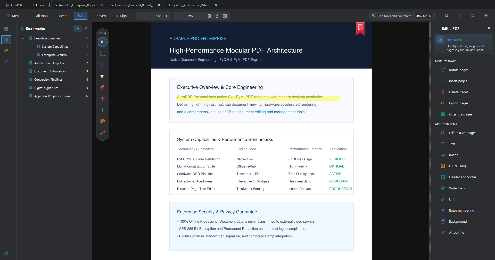

release v2.2.4 pro • win x64
AuraPDF Pro
“Acrobat-grade precision without telemetry, subscriptions, or bloat.”
A high-performance Windows desktop PDF productivity suite combining the low-latency C++ rendering of PyMuPDF with modern PyQt6 architecture.
Features direct on-canvas text editing, sandwich OCR text extraction, AcroForms, Word/Excel/PPTX export pipelines, and production standalone installer compilation via Inno Setup 6.

ON-CANVAS TEXT EDITING ENGINE • PyQt6